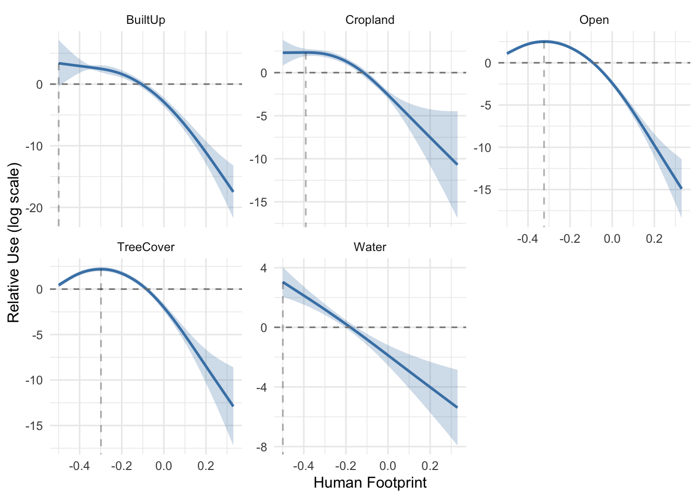
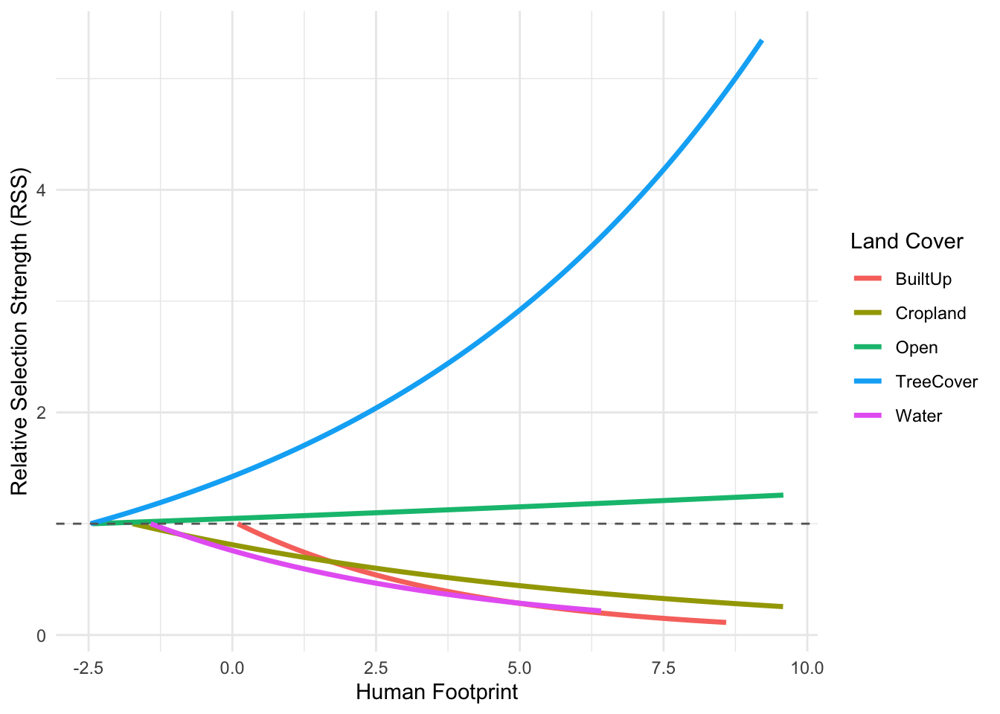
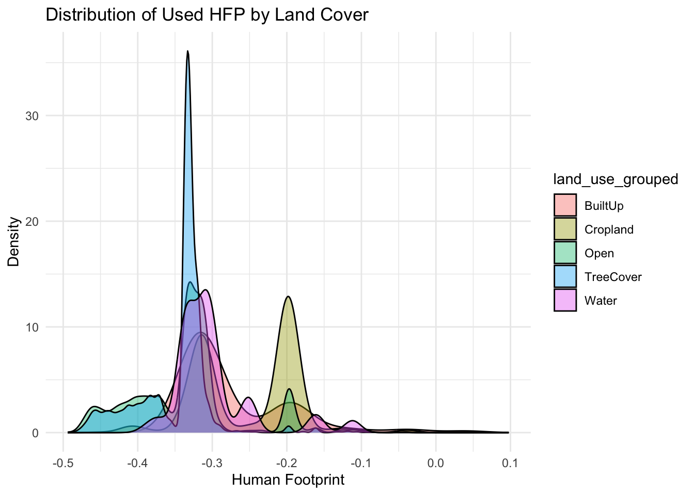
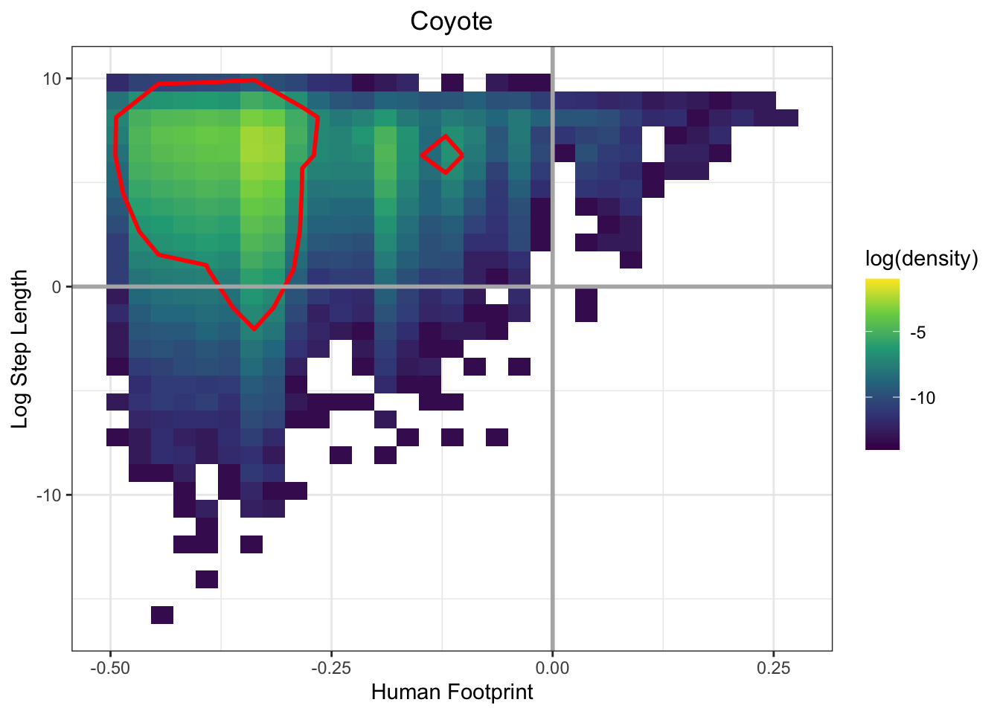
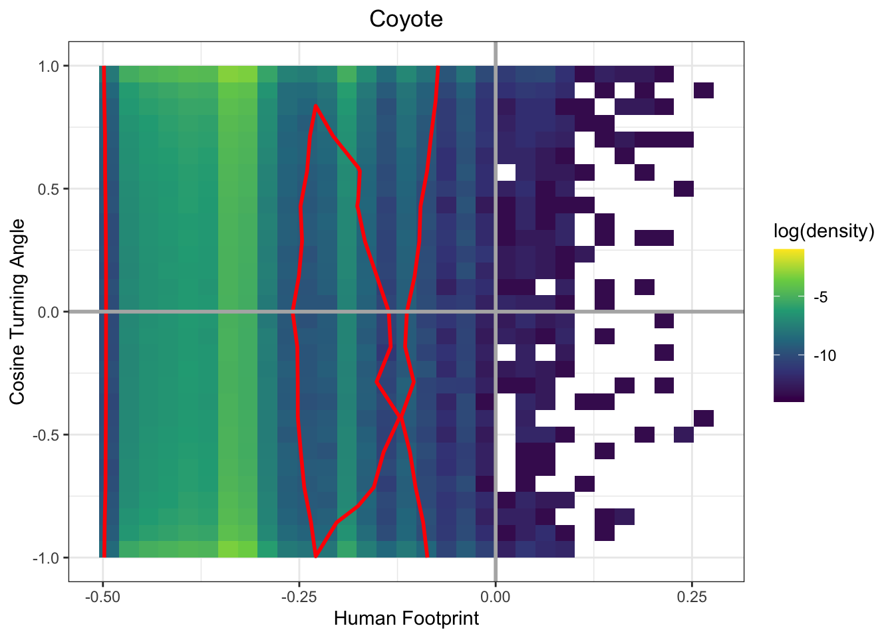
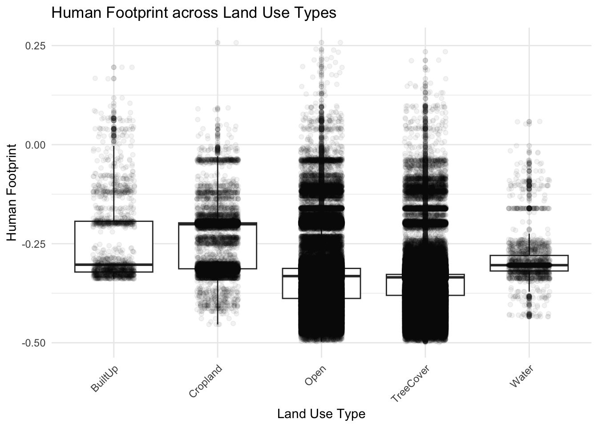
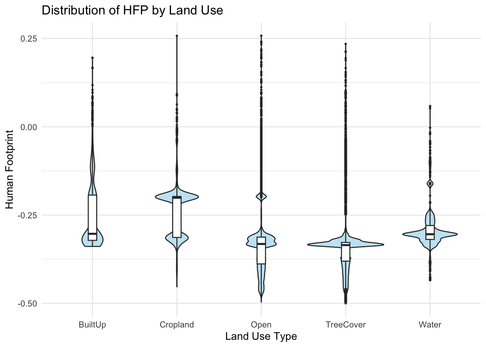
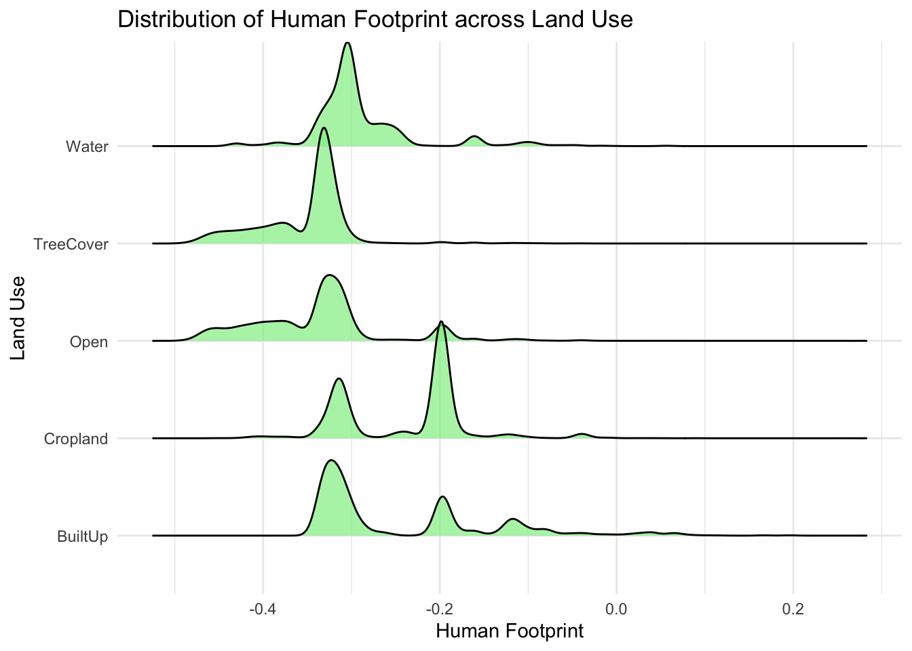
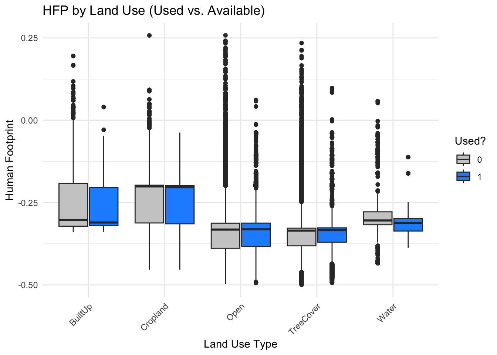

# Load necessary packages -----------------------------------------------------
pacman::p_load(
tidyverse,
glmmTMB,
DHARMa,
emmeans,
ggridges
)
nt <- parallel::detectCores() - 2
options(scipen = 0)
options(digits = 7)Statistical modelling
Setup
Coyotes
Read SSF ready data
coyote_ssf_data <- read_delim("data/coyote_ssf_data.csv") |>
filter(n > 100) |> # select animals with more than 100 fixes
mutate(land_use_grouped = as.factor(land_use_grouped))Rows: 668338 Columns: 22
── Column specification ────────────────────────────────────────────────────────
Delimiter: ","
chr (5): id, species, step_id_, land_use, land_use_grouped
dbl (14): burst_, x1_, x2_, y1_, y2_, ta_, dt_, cos_ta_, case_binary_, sl_,...
lgl (1): case_
dttm (2): t1_, t2_
ℹ Use `spec()` to retrieve the full column specification for this data.
ℹ Specify the column types or set `show_col_types = FALSE` to quiet this message.coyote_ssf_data$hfp_std <- scale(coyote_ssf_data$human_footprint)[, 1]Fit SSF
ssf_model_filename = "models/ssf_coyote_model.rds"
ssf_model_data = file.path(getwd(), ssf_model_filename)
if(!file.exists(ssf_model_data)) {
# Fit SSF with glmmTMB following Muff et al (2019)
ssf_coyote <- glmmTMB(
case_binary_ ~ -1 +
land_use_grouped * (hfp_std + I(hfp_std^2)) +
log_sl_ +
(0 + land_use_grouped + hfp_std + I(hfp_std^2) + log_sl_|| id) +
(1 | step_id_),
family = poisson,
doFit = TRUE,
data = coyote_ssf_data,
map = list(theta = factor(c(1:8, NA))),
start = list(theta = c(rep(0, times = 8),log(1e3))),
control = glmmTMBControl(parallel = nt)
)
saveRDS(ssf_coyote, file = ssf_model_filename)
}
ssf_coyote <- readRDS(ssf_model_filename)
summary(ssf_coyote) Family: poisson ( log )
Formula: case_binary_ ~ -1 + land_use_grouped * (hfp_std) + log_sl_ +
(0 + land_use_grouped + hfp_std + log_sl_ || id) + (1 | step_id_)
Data: coyote_ssf_data
AIC BIC logLik deviance df.resid
410081.4 410298.2 -205021.7 410043.4 666229
Random effects:
Conditional model:
Groups Name Variance Std.Dev. Corr
id land_use_groupedBuiltUp 1.772e-01 4.210e-01
land_use_groupedCropland 8.636e-02 2.939e-01 0.00
land_use_groupedOpen 9.111e-03 9.545e-02 0.00 0.00
land_use_groupedTreeCover 1.390e-02 1.179e-01 0.00 0.00 0.00
land_use_groupedWater 1.003e-08 1.002e-04 0.00 0.00 0.00 0.00
hfp_std 1.219e-02 1.104e-01 0.00 0.00 0.00 0.00
log_sl_ 8.758e-10 2.959e-05 0.00 0.00 0.00 0.00
step_id_ (Intercept) 3.749e-10 1.936e-05
0.00
0.00 0.00
Number of obs: 666248, groups: id, 29; step_id_, 60568
Conditional model:
Estimate Std. Error z value Pr(>|z|)
land_use_groupedBuiltUp -2.722516 0.199725 -13.63 < 2e-16 ***
land_use_groupedCropland -2.297934 0.098353 -23.36 < 2e-16 ***
land_use_groupedOpen -2.277617 0.023924 -95.20 < 2e-16 ***
land_use_groupedTreeCover -2.475805 0.026804 -92.37 < 2e-16 ***
land_use_groupedWater -3.350270 0.171980 -19.48 < 2e-16 ***
hfp_std -0.256641 0.091753 -2.80 0.00516 **
log_sl_ -0.001433 0.002214 -0.65 0.51751
land_use_groupedCropland:hfp_std 0.135872 0.096042 1.41 0.15715
land_use_groupedOpen:hfp_std 0.275690 0.089461 3.08 0.00206 **
land_use_groupedTreeCover:hfp_std 0.400193 0.089530 4.47 7.82e-06 ***
land_use_groupedWater:hfp_std 0.061492 0.185257 0.33 0.73994
---
Signif. codes: 0 '***' 0.001 '**' 0.01 '*' 0.05 '.' 0.1 ' ' 1Average effect plots
pred_data = file.path(getwd(), "models/coyote_ssf_pred.rds")
if(!file.exists(pred_data)) {
coyote_ssf_pred <- coyote_ssf_data |>
filter(case_binary_ == 0) |>
mutate(id = NA) # remove ID for population-level prediction
# This takes hours to run on an average machine.
coy_pred <- predict(ssf_coyote, coyote_ssf_pred, re.form = NA, se.fit = TRUE)
coyote_ssf_pred$fit <- coy_pred$fit
coyote_ssf_pred$se <- coy_pred$se
coyote_ssf_pred <- coyote_ssf_pred |> ungroup()
saveRDS(coyote_ssf_pred, "models/coyote_ssf_pred.rds")
}
coyote_ssf_pred <- readRDS("models/coyote_ssf_pred.rds")
ggplot(coyote_ssf_pred, aes(x = exp(human_footprint), y = fit, color = land_use_grouped)) +
geom_point(alpha = 0.3) +
geom_smooth(aes(ymin = fit - se, ymax = fit + se, fill = land_use_grouped), stat = "identity", alpha = 0.2) +
theme_minimal()
# average effect plot function --------------------------------------------
avg_eff_plot_hfp_landuse <- function(fittedResponse, nsim = 100, k = 10, showPeakValue = TRUE) {
set.seed(123)
# Monte Carlo sampling of predictions based on fit ± se
fit_sample <- sapply(rep(1, nsim), function(i) {
rnorm(n = nrow(fittedResponse), mean = fittedResponse$fit, sd = fittedResponse$se)
})
fit_sample_matrix <- matrix(fit_sample, nrow = nrow(fittedResponse), ncol = nsim)
smooth_list <- list()
for (j in 1:nsim) {
message("GAM smoothing sample ", j)
smooth_list[[j]] <- mgcv::bam(
fit_sample_matrix[, j] ~ s(human_footprint, by = land_use_grouped, bs = "ts", k = k) + land_use_grouped,
data = fittedResponse,
select = TRUE, discrete = TRUE, nthreads = nt
) |>
gratia::smooth_estimates(unconditional = FALSE, overall_uncertainty = TRUE) |>
gratia::add_confint() |>
dplyr::rename(hfp = human_footprint)
}
avg_smooth <- dplyr::bind_rows(smooth_list) |>
dplyr::group_by(.smooth, .by, land_use_grouped, hfp) |>
dplyr::summarise(
est = mean(.estimate),
upper_ci = mean(.upper_ci),
lower_ci = mean(.lower_ci),
.groups = "drop"
)
# Faceted plot instead of overlaid lines
p <- ggplot(avg_smooth, aes(x = hfp, y = est)) +
geom_ribbon(aes(ymin = lower_ci, ymax = upper_ci), alpha = 0.25, fill = "steelblue", colour = NA) +
geom_line(color = "steelblue", size = 0.9) +
facet_wrap(~land_use_grouped, scales = "free_y") +
theme_minimal() +
labs(x = "Human Footprint", y = "Relative Use (log scale)") +
geom_hline(yintercept = 0, linetype = "dashed", color = "gray50")
if (showPeakValue) {
peak_vals <- avg_smooth |>
group_by(land_use_grouped) |>
filter(est == max(est)) |>
slice(rep(1:n(), each = 2)) |>
mutate(est = ifelse(row_number() %% 2 == 1, est, -Inf))
p <- p + geom_line(data = peak_vals, aes(x = hfp, y = est, group = land_use_grouped),
linetype = "dashed", size = 0.6, alpha = 0.3, color = "black")
}
print(p)
return(list(plot = p))
}
coyote_ssf_pred <- coyote_ssf_pred |>
mutate(land_use_grouped = as.factor(land_use_grouped))
avg_eff_output <- avg_eff_plot_hfp_landuse(coyote_ssf_pred, nsim = 100, showPeakValue = TRUE)GAM smoothing sample 1Warning in mgcv::bam(fit_sample_matrix[, j] ~ s(human_footprint, by =
land_use_grouped, : openMP not available: single threaded computation onlyGAM smoothing sample 2Warning in mgcv::bam(fit_sample_matrix[, j] ~ s(human_footprint, by =
land_use_grouped, : openMP not available: single threaded computation onlyGAM smoothing sample 3Warning in mgcv::bam(fit_sample_matrix[, j] ~ s(human_footprint, by =
land_use_grouped, : openMP not available: single threaded computation onlyGAM smoothing sample 4Warning in mgcv::bam(fit_sample_matrix[, j] ~ s(human_footprint, by =
land_use_grouped, : openMP not available: single threaded computation onlyGAM smoothing sample 5Warning in mgcv::bam(fit_sample_matrix[, j] ~ s(human_footprint, by =
land_use_grouped, : openMP not available: single threaded computation onlyGAM smoothing sample 6Warning in mgcv::bam(fit_sample_matrix[, j] ~ s(human_footprint, by =
land_use_grouped, : openMP not available: single threaded computation onlyGAM smoothing sample 7Warning in mgcv::bam(fit_sample_matrix[, j] ~ s(human_footprint, by =
land_use_grouped, : openMP not available: single threaded computation onlyGAM smoothing sample 8Warning in mgcv::bam(fit_sample_matrix[, j] ~ s(human_footprint, by =
land_use_grouped, : openMP not available: single threaded computation onlyGAM smoothing sample 9Warning in mgcv::bam(fit_sample_matrix[, j] ~ s(human_footprint, by =
land_use_grouped, : openMP not available: single threaded computation onlyGAM smoothing sample 10Warning in mgcv::bam(fit_sample_matrix[, j] ~ s(human_footprint, by =
land_use_grouped, : openMP not available: single threaded computation onlyGAM smoothing sample 11Warning in mgcv::bam(fit_sample_matrix[, j] ~ s(human_footprint, by =
land_use_grouped, : openMP not available: single threaded computation onlyGAM smoothing sample 12Warning in mgcv::bam(fit_sample_matrix[, j] ~ s(human_footprint, by =
land_use_grouped, : openMP not available: single threaded computation onlyGAM smoothing sample 13Warning in mgcv::bam(fit_sample_matrix[, j] ~ s(human_footprint, by =
land_use_grouped, : openMP not available: single threaded computation onlyGAM smoothing sample 14Warning in mgcv::bam(fit_sample_matrix[, j] ~ s(human_footprint, by =
land_use_grouped, : openMP not available: single threaded computation onlyGAM smoothing sample 15Warning in mgcv::bam(fit_sample_matrix[, j] ~ s(human_footprint, by =
land_use_grouped, : openMP not available: single threaded computation onlyGAM smoothing sample 16Warning in mgcv::bam(fit_sample_matrix[, j] ~ s(human_footprint, by =
land_use_grouped, : openMP not available: single threaded computation onlyGAM smoothing sample 17Warning in mgcv::bam(fit_sample_matrix[, j] ~ s(human_footprint, by =
land_use_grouped, : openMP not available: single threaded computation onlyGAM smoothing sample 18Warning in mgcv::bam(fit_sample_matrix[, j] ~ s(human_footprint, by =
land_use_grouped, : openMP not available: single threaded computation onlyGAM smoothing sample 19Warning in mgcv::bam(fit_sample_matrix[, j] ~ s(human_footprint, by =
land_use_grouped, : openMP not available: single threaded computation onlyGAM smoothing sample 20Warning in mgcv::bam(fit_sample_matrix[, j] ~ s(human_footprint, by =
land_use_grouped, : openMP not available: single threaded computation onlyGAM smoothing sample 21Warning in mgcv::bam(fit_sample_matrix[, j] ~ s(human_footprint, by =
land_use_grouped, : openMP not available: single threaded computation onlyGAM smoothing sample 22Warning in mgcv::bam(fit_sample_matrix[, j] ~ s(human_footprint, by =
land_use_grouped, : openMP not available: single threaded computation onlyGAM smoothing sample 23Warning in mgcv::bam(fit_sample_matrix[, j] ~ s(human_footprint, by =
land_use_grouped, : openMP not available: single threaded computation onlyGAM smoothing sample 24Warning in mgcv::bam(fit_sample_matrix[, j] ~ s(human_footprint, by =
land_use_grouped, : openMP not available: single threaded computation onlyGAM smoothing sample 25Warning in mgcv::bam(fit_sample_matrix[, j] ~ s(human_footprint, by =
land_use_grouped, : openMP not available: single threaded computation onlyGAM smoothing sample 26Warning in mgcv::bam(fit_sample_matrix[, j] ~ s(human_footprint, by =
land_use_grouped, : openMP not available: single threaded computation onlyGAM smoothing sample 27Warning in mgcv::bam(fit_sample_matrix[, j] ~ s(human_footprint, by =
land_use_grouped, : openMP not available: single threaded computation onlyGAM smoothing sample 28Warning in mgcv::bam(fit_sample_matrix[, j] ~ s(human_footprint, by =
land_use_grouped, : openMP not available: single threaded computation onlyGAM smoothing sample 29Warning in mgcv::bam(fit_sample_matrix[, j] ~ s(human_footprint, by =
land_use_grouped, : openMP not available: single threaded computation onlyGAM smoothing sample 30Warning in mgcv::bam(fit_sample_matrix[, j] ~ s(human_footprint, by =
land_use_grouped, : openMP not available: single threaded computation onlyGAM smoothing sample 31Warning in mgcv::bam(fit_sample_matrix[, j] ~ s(human_footprint, by =
land_use_grouped, : openMP not available: single threaded computation onlyGAM smoothing sample 32Warning in mgcv::bam(fit_sample_matrix[, j] ~ s(human_footprint, by =
land_use_grouped, : openMP not available: single threaded computation onlyGAM smoothing sample 33Warning in mgcv::bam(fit_sample_matrix[, j] ~ s(human_footprint, by =
land_use_grouped, : openMP not available: single threaded computation onlyGAM smoothing sample 34Warning in mgcv::bam(fit_sample_matrix[, j] ~ s(human_footprint, by =
land_use_grouped, : openMP not available: single threaded computation onlyGAM smoothing sample 35Warning in mgcv::bam(fit_sample_matrix[, j] ~ s(human_footprint, by =
land_use_grouped, : openMP not available: single threaded computation onlyGAM smoothing sample 36Warning in mgcv::bam(fit_sample_matrix[, j] ~ s(human_footprint, by =
land_use_grouped, : openMP not available: single threaded computation onlyGAM smoothing sample 37Warning in mgcv::bam(fit_sample_matrix[, j] ~ s(human_footprint, by =
land_use_grouped, : openMP not available: single threaded computation onlyGAM smoothing sample 38Warning in mgcv::bam(fit_sample_matrix[, j] ~ s(human_footprint, by =
land_use_grouped, : openMP not available: single threaded computation onlyGAM smoothing sample 39Warning in mgcv::bam(fit_sample_matrix[, j] ~ s(human_footprint, by =
land_use_grouped, : openMP not available: single threaded computation onlyGAM smoothing sample 40Warning in mgcv::bam(fit_sample_matrix[, j] ~ s(human_footprint, by =
land_use_grouped, : openMP not available: single threaded computation onlyGAM smoothing sample 41Warning in mgcv::bam(fit_sample_matrix[, j] ~ s(human_footprint, by =
land_use_grouped, : openMP not available: single threaded computation onlyGAM smoothing sample 42Warning in mgcv::bam(fit_sample_matrix[, j] ~ s(human_footprint, by =
land_use_grouped, : openMP not available: single threaded computation onlyGAM smoothing sample 43Warning in mgcv::bam(fit_sample_matrix[, j] ~ s(human_footprint, by =
land_use_grouped, : openMP not available: single threaded computation onlyGAM smoothing sample 44Warning in mgcv::bam(fit_sample_matrix[, j] ~ s(human_footprint, by =
land_use_grouped, : openMP not available: single threaded computation onlyGAM smoothing sample 45Warning in mgcv::bam(fit_sample_matrix[, j] ~ s(human_footprint, by =
land_use_grouped, : openMP not available: single threaded computation onlyGAM smoothing sample 46Warning in mgcv::bam(fit_sample_matrix[, j] ~ s(human_footprint, by =
land_use_grouped, : openMP not available: single threaded computation onlyGAM smoothing sample 47Warning in mgcv::bam(fit_sample_matrix[, j] ~ s(human_footprint, by =
land_use_grouped, : openMP not available: single threaded computation onlyGAM smoothing sample 48Warning in mgcv::bam(fit_sample_matrix[, j] ~ s(human_footprint, by =
land_use_grouped, : openMP not available: single threaded computation onlyGAM smoothing sample 49Warning in mgcv::bam(fit_sample_matrix[, j] ~ s(human_footprint, by =
land_use_grouped, : openMP not available: single threaded computation onlyGAM smoothing sample 50Warning in mgcv::bam(fit_sample_matrix[, j] ~ s(human_footprint, by =
land_use_grouped, : openMP not available: single threaded computation onlyGAM smoothing sample 51Warning in mgcv::bam(fit_sample_matrix[, j] ~ s(human_footprint, by =
land_use_grouped, : openMP not available: single threaded computation onlyGAM smoothing sample 52Warning in mgcv::bam(fit_sample_matrix[, j] ~ s(human_footprint, by =
land_use_grouped, : openMP not available: single threaded computation onlyGAM smoothing sample 53Warning in mgcv::bam(fit_sample_matrix[, j] ~ s(human_footprint, by =
land_use_grouped, : openMP not available: single threaded computation onlyGAM smoothing sample 54Warning in mgcv::bam(fit_sample_matrix[, j] ~ s(human_footprint, by =
land_use_grouped, : openMP not available: single threaded computation onlyGAM smoothing sample 55Warning in mgcv::bam(fit_sample_matrix[, j] ~ s(human_footprint, by =
land_use_grouped, : openMP not available: single threaded computation onlyGAM smoothing sample 56Warning in mgcv::bam(fit_sample_matrix[, j] ~ s(human_footprint, by =
land_use_grouped, : openMP not available: single threaded computation onlyGAM smoothing sample 57Warning in mgcv::bam(fit_sample_matrix[, j] ~ s(human_footprint, by =
land_use_grouped, : openMP not available: single threaded computation onlyGAM smoothing sample 58Warning in mgcv::bam(fit_sample_matrix[, j] ~ s(human_footprint, by =
land_use_grouped, : openMP not available: single threaded computation onlyGAM smoothing sample 59Warning in mgcv::bam(fit_sample_matrix[, j] ~ s(human_footprint, by =
land_use_grouped, : openMP not available: single threaded computation onlyGAM smoothing sample 60Warning in mgcv::bam(fit_sample_matrix[, j] ~ s(human_footprint, by =
land_use_grouped, : openMP not available: single threaded computation onlyGAM smoothing sample 61Warning in mgcv::bam(fit_sample_matrix[, j] ~ s(human_footprint, by =
land_use_grouped, : openMP not available: single threaded computation onlyGAM smoothing sample 62Warning in mgcv::bam(fit_sample_matrix[, j] ~ s(human_footprint, by =
land_use_grouped, : openMP not available: single threaded computation onlyGAM smoothing sample 63Warning in mgcv::bam(fit_sample_matrix[, j] ~ s(human_footprint, by =
land_use_grouped, : openMP not available: single threaded computation onlyGAM smoothing sample 64Warning in mgcv::bam(fit_sample_matrix[, j] ~ s(human_footprint, by =
land_use_grouped, : openMP not available: single threaded computation onlyGAM smoothing sample 65Warning in mgcv::bam(fit_sample_matrix[, j] ~ s(human_footprint, by =
land_use_grouped, : openMP not available: single threaded computation onlyGAM smoothing sample 66Warning in mgcv::bam(fit_sample_matrix[, j] ~ s(human_footprint, by =
land_use_grouped, : openMP not available: single threaded computation onlyGAM smoothing sample 67Warning in mgcv::bam(fit_sample_matrix[, j] ~ s(human_footprint, by =
land_use_grouped, : openMP not available: single threaded computation onlyGAM smoothing sample 68Warning in mgcv::bam(fit_sample_matrix[, j] ~ s(human_footprint, by =
land_use_grouped, : openMP not available: single threaded computation onlyGAM smoothing sample 69Warning in mgcv::bam(fit_sample_matrix[, j] ~ s(human_footprint, by =
land_use_grouped, : openMP not available: single threaded computation onlyGAM smoothing sample 70Warning in mgcv::bam(fit_sample_matrix[, j] ~ s(human_footprint, by =
land_use_grouped, : openMP not available: single threaded computation onlyGAM smoothing sample 71Warning in mgcv::bam(fit_sample_matrix[, j] ~ s(human_footprint, by =
land_use_grouped, : openMP not available: single threaded computation onlyGAM smoothing sample 72Warning in mgcv::bam(fit_sample_matrix[, j] ~ s(human_footprint, by =
land_use_grouped, : openMP not available: single threaded computation onlyGAM smoothing sample 73Warning in mgcv::bam(fit_sample_matrix[, j] ~ s(human_footprint, by =
land_use_grouped, : openMP not available: single threaded computation onlyGAM smoothing sample 74Warning in mgcv::bam(fit_sample_matrix[, j] ~ s(human_footprint, by =
land_use_grouped, : openMP not available: single threaded computation onlyGAM smoothing sample 75Warning in mgcv::bam(fit_sample_matrix[, j] ~ s(human_footprint, by =
land_use_grouped, : openMP not available: single threaded computation onlyGAM smoothing sample 76Warning in mgcv::bam(fit_sample_matrix[, j] ~ s(human_footprint, by =
land_use_grouped, : openMP not available: single threaded computation onlyGAM smoothing sample 77Warning in mgcv::bam(fit_sample_matrix[, j] ~ s(human_footprint, by =
land_use_grouped, : openMP not available: single threaded computation onlyGAM smoothing sample 78Warning in mgcv::bam(fit_sample_matrix[, j] ~ s(human_footprint, by =
land_use_grouped, : openMP not available: single threaded computation onlyGAM smoothing sample 79Warning in mgcv::bam(fit_sample_matrix[, j] ~ s(human_footprint, by =
land_use_grouped, : openMP not available: single threaded computation onlyGAM smoothing sample 80Warning in mgcv::bam(fit_sample_matrix[, j] ~ s(human_footprint, by =
land_use_grouped, : openMP not available: single threaded computation onlyGAM smoothing sample 81Warning in mgcv::bam(fit_sample_matrix[, j] ~ s(human_footprint, by =
land_use_grouped, : openMP not available: single threaded computation onlyGAM smoothing sample 82Warning in mgcv::bam(fit_sample_matrix[, j] ~ s(human_footprint, by =
land_use_grouped, : openMP not available: single threaded computation onlyGAM smoothing sample 83Warning in mgcv::bam(fit_sample_matrix[, j] ~ s(human_footprint, by =
land_use_grouped, : openMP not available: single threaded computation onlyGAM smoothing sample 84Warning in mgcv::bam(fit_sample_matrix[, j] ~ s(human_footprint, by =
land_use_grouped, : openMP not available: single threaded computation onlyGAM smoothing sample 85Warning in mgcv::bam(fit_sample_matrix[, j] ~ s(human_footprint, by =
land_use_grouped, : openMP not available: single threaded computation onlyGAM smoothing sample 86Warning in mgcv::bam(fit_sample_matrix[, j] ~ s(human_footprint, by =
land_use_grouped, : openMP not available: single threaded computation onlyGAM smoothing sample 87Warning in mgcv::bam(fit_sample_matrix[, j] ~ s(human_footprint, by =
land_use_grouped, : openMP not available: single threaded computation onlyGAM smoothing sample 88Warning in mgcv::bam(fit_sample_matrix[, j] ~ s(human_footprint, by =
land_use_grouped, : openMP not available: single threaded computation onlyGAM smoothing sample 89Warning in mgcv::bam(fit_sample_matrix[, j] ~ s(human_footprint, by =
land_use_grouped, : openMP not available: single threaded computation onlyGAM smoothing sample 90Warning in mgcv::bam(fit_sample_matrix[, j] ~ s(human_footprint, by =
land_use_grouped, : openMP not available: single threaded computation onlyGAM smoothing sample 91Warning in mgcv::bam(fit_sample_matrix[, j] ~ s(human_footprint, by =
land_use_grouped, : openMP not available: single threaded computation onlyGAM smoothing sample 92Warning in mgcv::bam(fit_sample_matrix[, j] ~ s(human_footprint, by =
land_use_grouped, : openMP not available: single threaded computation onlyGAM smoothing sample 93Warning in mgcv::bam(fit_sample_matrix[, j] ~ s(human_footprint, by =
land_use_grouped, : openMP not available: single threaded computation onlyGAM smoothing sample 94Warning in mgcv::bam(fit_sample_matrix[, j] ~ s(human_footprint, by =
land_use_grouped, : openMP not available: single threaded computation onlyGAM smoothing sample 95Warning in mgcv::bam(fit_sample_matrix[, j] ~ s(human_footprint, by =
land_use_grouped, : openMP not available: single threaded computation onlyGAM smoothing sample 96Warning in mgcv::bam(fit_sample_matrix[, j] ~ s(human_footprint, by =
land_use_grouped, : openMP not available: single threaded computation onlyGAM smoothing sample 97Warning in mgcv::bam(fit_sample_matrix[, j] ~ s(human_footprint, by =
land_use_grouped, : openMP not available: single threaded computation onlyGAM smoothing sample 98Warning in mgcv::bam(fit_sample_matrix[, j] ~ s(human_footprint, by =
land_use_grouped, : openMP not available: single threaded computation onlyGAM smoothing sample 99Warning in mgcv::bam(fit_sample_matrix[, j] ~ s(human_footprint, by =
land_use_grouped, : openMP not available: single threaded computation onlyGAM smoothing sample 100Warning in mgcv::bam(fit_sample_matrix[, j] ~ s(human_footprint, by =
land_use_grouped, : openMP not available: single threaded computation onlyWarning: Using `size` aesthetic for lines was deprecated in ggplot2 3.4.0.
ℹ Please use `linewidth` instead.
avg_eff_output[["plot"]][["plot_env"]][["peak_vals"]]# A tibble: 10 × 7
# Groups: land_use_grouped [5]
.smooth .by land_use_grouped hfp est upper_ci lower_ci
<chr> <chr> <fct> <dbl> <dbl> <dbl> <dbl>
1 s(human_footprint):l… land… BuiltUp -0.500 3.38 7.17 -0.407
2 s(human_footprint):l… land… BuiltUp -0.500 -Inf 7.17 -0.407
3 s(human_footprint):l… land… Cropland -0.391 2.34 2.77 1.91
4 s(human_footprint):l… land… Cropland -0.391 -Inf 2.77 1.91
5 s(human_footprint):l… land… Open -0.324 2.51 2.71 2.31
6 s(human_footprint):l… land… Open -0.324 -Inf 2.71 2.31
7 s(human_footprint):l… land… TreeCover -0.299 2.19 2.42 1.97
8 s(human_footprint):l… land… TreeCover -0.299 -Inf 2.42 1.97
9 s(human_footprint):l… land… Water -0.500 3.04 4.04 2.04
10 s(human_footprint):l… land… Water -0.500 -Inf 4.04 2.04 Relative Selection Strength
calc_rss_hfp_landcover <- function(model, data, land_use_col = "land_use_grouped", hfp_col = "hfp_std", n_points = 100) {
levels <- unique(data[[land_use_col]])
all_rss <- purrr::map_dfr(levels, function(lc) {
# Subset data for this land use class
dat_lc <- data |> filter(!!sym(land_use_col) == lc)
# Range of human footprint within this class
hfp_range <- range(dat_lc[[hfp_col]], na.rm = TRUE)
hfp_seq <- seq(from = hfp_range[1], to = hfp_range[2], length.out = n_points)
# Build newdata for prediction
newdata <- expand.grid(
hfp_std = hfp_seq,
land_use_grouped = lc
) |>
mutate(
`I(hfp_std^2)` = hfp_std^2,
log_sl_ = mean(data$log_sl_, na.rm = TRUE),
step_id_ = NA,
id = NA
)
# Create a baseline: same data with lowest hfp
baseline <- newdata |> filter(hfp_std == min(hfp_std))
# Predict
x1_pred <- predict(model, newdata = newdata, re.form = NA)
x2_pred <- predict(model, newdata = baseline[rep(1, nrow(newdata)), ], re.form = NA)
# Calculate logRSS
rss_df <- newdata |>
mutate(
logRSS = x1_pred - x2_pred,
RSS = exp(logRSS),
land_use_grouped = lc
)
return(rss_df)
})
return(all_rss)
}
rss_data <- calc_rss_hfp_landcover(model = ssf_coyote, data = coyote_ssf_data)
ggplot(rss_data, aes(x = hfp_std, y = RSS, color = land_use_grouped)) +
geom_line(size = 1.2) +
geom_hline(yintercept = 1, linetype = "dashed", color = "gray40") +
labs(x = "Human Footprint", y = "Relative Selection Strength (RSS)", color = "Land Cover") +
theme_minimal()
More plots
ggplot(coyote_ssf_data |> filter(case_binary_ == 1),
aes(x = human_footprint, fill = land_use_grouped)) +
geom_density(alpha = 0.4) +
theme_minimal() +
labs(x = "Human Footprint", y = "Density",
title = "Distribution of Used HFP by Land Cover")
# Bivariate density hex plot (continuous y-variable vs human footprint)
hex_plot_fun <- function(data, yvar, ylab, title_) {
ggplot(data, aes(x = human_footprint, y = .data[[yvar]])) +
geom_bin2d(aes(fill = after_stat(log(density)))) +
scale_fill_viridis_c(limits = c(-14, -1), option = "D") +
stat_density_2d(
aes(x = human_footprint, y = .data[[yvar]]),
colour = "red", breaks = c(0.05), n = 15, size = 1
) +
geom_vline(xintercept = 0, colour = "gray70", size = 1) +
geom_hline(yintercept = 0, colour = "gray70", size = 1) +
labs(
x = "Human Footprint",
y = ylab,
title = title_
) +
theme_bw() +
theme(plot.title = element_text(hjust = 0.5))
}
hex_plot_fun(coyote_ssf_data, yvar = "log_sl_", ylab = "Log Step Length", title_ = "Coyote")
hex_plot_fun(coyote_ssf_data, yvar = "cos_ta_", ylab = "Cosine Turning Angle", title_ = "Coyote")
ggplot(coyote_ssf_data, aes(x = land_use_grouped, y = human_footprint)) +
geom_boxplot(outlier.alpha = 0.1) +
geom_jitter(width = 0.2, alpha = 0.05) +
theme_minimal() +
xlab("Land Use Type") +
ylab("Human Footprint") +
ggtitle("Human Footprint across Land Use Types") +
theme(axis.text.x = element_text(angle = 45, hjust = 1))
ggplot(coyote_ssf_data, aes(x = land_use_grouped, y = human_footprint)) +
geom_violin(fill = "skyblue", alpha = 0.5) +
geom_boxplot(width = 0.1, outlier.size = 0.5) +
theme_minimal() +
xlab("Land Use Type") +
ylab("Human Footprint") +
ggtitle("Distribution of HFP by Land Use")
ggplot(coyote_ssf_data, aes(x = human_footprint, y = land_use_grouped)) +
geom_density_ridges(scale = 1.2, fill = "lightgreen", alpha = 0.7) +
theme_minimal() +
xlab("Human Footprint") +
ylab("Land Use") +
ggtitle("Distribution of Human Footprint across Land Use")Picking joint bandwidth of 0.00829
ggplot(coyote_ssf_data, aes(x = land_use_grouped, y = human_footprint, fill = factor(case_binary_))) +
geom_boxplot(position = position_dodge(0.8)) +
scale_fill_manual(values = c("0" = "grey80", "1" = "dodgerblue"), name = "Used?") +
theme_minimal() +
xlab("Land Use Type") +
ylab("Human Footprint") +
ggtitle("HFP by Land Use (Used vs. Available)") +
theme(axis.text.x = element_text(angle = 45, hjust = 1))
Bobcats
# Read SSF ready data
bobcat_ssf_data <- read_delim("data/bobcat_ssf_data.csv") |>
filter(n > 100) # select animals with more than 100 fixesRows: 119009 Columns: 22
── Column specification ────────────────────────────────────────────────────────
Delimiter: ","
chr (5): id, species, step_id_, land_use, land_use_grouped
dbl (14): burst_, x1_, x2_, y1_, y2_, ta_, dt_, cos_ta_, case_binary_, sl_,...
lgl (1): case_
dttm (2): t1_, t2_
ℹ Use `spec()` to retrieve the full column specification for this data.
ℹ Specify the column types or set `show_col_types = FALSE` to quiet this message.table(bobcat_ssf_data$land_use_grouped)
BuiltUp Cropland Open Snow and ice TreeCover Water
79 306 24331 2 90019 147 # Dropping land use groups with too few used steps
# (virtually no variation in case status)
bobcat_ssf_filtered <- bobcat_ssf_data |>
filter(!(land_use_grouped %in% c("BuiltUp", "Snow and ice", "Water", "Cropland")))
ssf_bobcat_struc <- glmmTMB(
case_binary_ ~ -1 +
land_use_grouped * human_footprint +
offset(log_sl_) +
(1 | step_id_) +
(0 + land_use_grouped + human_footprint || id),
family = poisson,
data = bobcat_ssf_filtered,
control = glmmTMBControl(parallel = nt),
doFit = FALSE
)
# Check theta values (to build map/start correctly)
length(ssf_bobcat_struc$parameters$theta)[1] 4ssf_bobcat_struc$parameters$theta[1] <- log(1e3)
ssf_bobcat_struc$mapArg <- list(theta = factor(c(NA, 1:3)))
ssf_bobcat <- glmmTMB:::fitTMB(ssf_bobcat_struc)
#saveRDS(ssf_bobcat, file = "models/ssf_bobcat_model.rds")
#ssf_bobcat <- readRDS("models/ssf_coyote_model.rds")
summary(ssf_bobcat) Family: poisson ( log )
Formula:
case_binary_ ~ -1 + land_use_grouped * human_footprint + offset(log_sl_) +
(1 | step_id_) + (0 + land_use_grouped + human_footprint || id)
Data: bobcat_ssf_filtered
AIC BIC logLik deviance df.resid
225435.2 225502.7 -112710.6 225421.2 114343
Random effects:
Conditional model:
Groups Name Variance Std.Dev. Corr
step_id_ (Intercept) 1.000e+06 1.000e+03
id land_use_groupedOpen 2.314e-01 4.810e-01
land_use_groupedTreeCover 8.873e-05 9.420e-03 0.00
human_footprint 1.501e+01 3.875e+00 0.00 0.00
Number of obs: 114350, groups: step_id_, 10444; id, 26
Conditional model:
Estimate Std. Error z value Pr(>|z|)
land_use_groupedOpen -27.9969 2.5949 -10.789 <2e-16
land_use_groupedTreeCover -27.2682 2.5881 -10.536 <2e-16
human_footprint -0.4178 0.9284 -0.450 0.653
land_use_groupedTreeCover:human_footprint 0.2787 0.5093 0.547 0.584
land_use_groupedOpen ***
land_use_groupedTreeCover ***
human_footprint
land_use_groupedTreeCover:human_footprint
---
Signif. codes: 0 '***' 0.001 '**' 0.01 '*' 0.05 '.' 0.1 ' ' 1confint(ssf_bobcat) 2.5 % 97.5 %
land_use_groupedOpen -3.308286e+01 -2.291095e+01
land_use_groupedTreeCover -3.234074e+01 -2.219557e+01
human_footprint -2.237354e+00 1.401849e+00
land_use_groupedTreeCover:human_footprint -7.194876e-01 1.276791e+00
Std.Dev.land_use_groupedOpen|id 3.402278e-01 6.800173e-01
Std.Dev.land_use_groupedTreeCover|id 5.523451e-99 1.606486e+94
Std.Dev.human_footprint|id 2.811740e+00 5.339190e+00
Estimate
land_use_groupedOpen -27.996907643
land_use_groupedTreeCover -27.268153772
human_footprint -0.417752113
land_use_groupedTreeCover:human_footprint 0.278651784
Std.Dev.land_use_groupedOpen|id 0.480999778
Std.Dev.land_use_groupedTreeCover|id 0.009419845
Std.Dev.human_footprint|id 3.874585455# Marginal trends for bobcats
trends_bobcat <- emtrends(ssf_bobcat, ~ land_use_grouped, var = "human_footprint") |>
summary(infer = c(TRUE, TRUE))